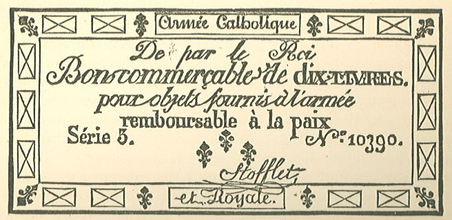
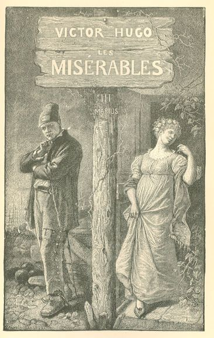

Les Misérables
CHAPTER VIII—A SUCCESSFUL INTERROGATORY
An hour later, in the darkness of night, two men and a child presented themselves
at No. 62 Rue Petit-Picpus. The elder of the men lifted the knocker and rapped.
They were Fauchelevent, Jean Valjean, and Cosette.
The two old men had gone to fetch Cosette from the fruiterer's in the Rue du Chemin-Vert,
where Fauchelevent had deposited her on the preceding day. Cosette had passed these
twenty-four hours trembling silently and understanding nothing. She trembled to such
a degree that she wept. She had neither eaten nor slept. The worthy fruit-seller had
plied her with a hundred questions, without obtaining any other reply than a melancholy
and unvarying gaze. Cosette had betrayed nothing of what she had seen and heard during
the last two days. She divined that they were passing through a crisis. She was deeply
conscious that it was necessary to "be good." Who has not experienced the sovereign
power of those two words, pronounced with a certain accent in the ear of a terrified
little being: Say nothing! Fear is mute. Moreover, no one guards a secret like a child.
But when, at the expiration of these lugubrious twenty-four hours, she beheld Jean
Valjean again, she gave vent to such a cry of joy, that any thoughtful person who
had chanced to hear that cry, would have guessed that it issued from an abyss.
Fauchelevent belonged to the convent and knew the pass-words. All the doors opened.
Thus was solved the double and alarming problem of how to get out and how to get in.
The porter, who had received his instructions, opened the little servant's door which
connected the courtyard with the garden, and which could still be seen from the street
twenty years ago, in the wall at the bottom of the court, which faced the carriage
entrance.
The porter admitted all three of them through this door, and from that point they
reached the inner, reserved parlor where Fauchelevent, on the preceding day, had received
his orders from the prioress.
The prioress, rosary in hand, was waiting for them. A vocal mother, with her veil
lowered, stood beside her.
A discreet candle lighted, one might almost say, made a show of lighting the parlor.
The prioress passed Jean Valjean in review. There is nothing which examines like a
downcast eye.
Then she questioned him:—
"You are the brother?"
"Yes, reverend Mother," replied Fauchelevent.
"What is your name?"
Fauchelevent replied:—
"Ultime Fauchelevent."
He really had had a brother named Ultime, who was dead.
"Where do you come from?"
Fauchelevent replied:—
"From Picquigny, near Amiens."
"What is your age?"
Fauchelevent replied:—
"Fifty."
"What is your profession?"
Fauchelevent replied:—
"Gardener."
"Are you a good Christian?"
Fauchelevent replied:—
"Every one is in the family."
"Is this your little girl?"
Fauchelevent replied:—
"Yes, reverend Mother."
"You are her father?"
Fauchelevent replied:—
"Her grandfather."
The vocal mother said to the prioress in a low voice
"He answers well."
Jean Valjean had not uttered a single word.
The prioress looked attentively at Cosette, and said half aloud to the vocal mother:—
"She will grow up ugly."
The two mothers consulted for a few moments in very low tones in the corner of the
parlor, then the prioress turned round and said:—
"Father Fauvent, you will get another knee-cap with a bell. Two will be required now."
On the following day, therefore, two bells were audible in the garden, and the nuns
could not resist the temptation to raise the corner of their veils. At the extreme
end of the garden, under the trees, two men, Fauvent and another man, were visible
as they dug side by side. An enormous event. Their silence was broken to the extent
of saying to each other: "He is an assistant gardener."
The vocal mothers added: "He is a brother of Father Fauvent."
Jean Valjean was, in fact, regularly installed; he had his belled knee-cap; henceforth
he was official. His name was Ultime Fauchelevent.
The most powerful determining cause of his admission had been the prioress's observation
upon Cosette: "She will grow up ugly."
The prioress, that pronounced prognosticator, immediately took a fancy to Cosette
and gave her a place in the school as a charity pupil.
There is nothing that is not strictly logical about this.
It is in vain that mirrors are banished from the convent, women are conscious of their
faces; now, girls who are conscious of their beauty do not easily become nuns; the
vocation being voluntary in inverse proportion to their good looks, more is to be
hoped from the ugly than from the pretty. Hence a lively taste for plain girls.
The whole of this adventure increased the importance of good, old Fauchelevent; he
won a triple success; in the eyes of Jean Valjean, whom he had saved and sheltered;
in those of grave-digger Gribier, who said to himself: "He spared me that fine"; with
the convent, which, being enabled, thanks to him, to retain the coffin of Mother Crucifixion
under the altar, eluded Caesar and satisfied God. There was a coffin containing a
body in the Petit-Picpus, and a coffin without a body in the Vaugirard cemetery, public
order had no doubt been deeply disturbed thereby, but no one was aware of it.
As for the convent, its gratitude to Fauchelevent was very great. Fauchelevent became
the best of servitors and the most precious of gardeners. Upon the occasion of the
archbishop's next visit, the prioress recounted the affair to his Grace, making something
of a confession at the same time, and yet boasting of her deed. On leaving the convent,
the archbishop mentioned it with approval, and in a whisper to M. de Latil, Monsieur's
confessor, afterwards Archbishop of Reims and Cardinal. This admiration for Fauchelevent
became widespread, for it made its way to Rome. We have seen a note addressed by the
then reigning Pope, Leo XII., to one of his relatives, a Monsignor in the Nuncio's
establishment in Paris, and bearing, like himself, the name of Della Genga; it contained
these lines: "It appears that there is in a convent in Paris an excellent gardener,
who is also a holy man, named Fauvent." Nothing of this triumph reached Fauchelevent
in his hut; he went on grafting, weeding, and covering up his melon beds, without
in the least suspecting his excellences and his sanctity. Neither did he suspect his
glory, any more than a Durham or Surrey bull whose portrait is published in the London
Illustrated News, with this inscription: "Bull which carried off the prize at the
Cattle Show."
CHAPTER IX—CLOISTERED
Cosette continued to hold her tongue in the convent.
It was quite natural that Cosette should think herself Jean Valjean's daughter. Moreover,
as she knew nothing, she could say nothing, and then, she would not have said anything
in any case. As we have just observed, nothing trains children to silence like unhappiness.
Cosette had suffered so much, that she feared everything, even to speak or to breathe.
A single word had so often brought down an avalanche upon her. She had hardly begun
to regain her confidence since she had been with Jean Valjean. She speedily became
accustomed to the convent. Only she regretted Catherine, but she dared not say so.
Once, however, she did say to Jean Valjean: "Father, if I had known, I would have
brought her away with me."
Cosette had been obliged, on becoming a scholar in the convent, to don the garb of
the pupils of the house. Jean Valjean succeeded in getting them to restore to him
the garments which she laid aside. This was the same mourning suit which he had made
her put on when she had quitted the Thenardiers' inn. It was not very threadbare even
now. Jean Valjean locked up these garments, plus the stockings and the shoes, with
a quantity of camphor and all the aromatics in which convents abound, in a little
valise which he found means of procuring. He set this valise on a chair near his bed,
and he always carried the key about his person. "Father," Cosette asked him one day,
"what is there in that box which smells so good?"
Father Fauchelevent received other recompense for his good action, in addition to
the glory which we just mentioned, and of which he knew nothing; in the first place
it made him happy; next, he had much less work, since it was shared. Lastly, as he
was very fond of snuff, he found the presence of M. Madeleine an advantage, in that
he used three times as much as he had done previously, and that in an infinitely more
luxurious manner, seeing that M. Madeleine paid for it.
The nuns did not adopt the name of Ultime; they called Jean Valjean the other Fauvent.
If these holy women had possessed anything of Javert's glance, they would eventually
have noticed that when there was any errand to be done outside in the behalf of the
garden, it was always the elder Fauchelevent, the old, the infirm, the lame man, who
went, and never the other; but whether it is that eyes constantly fixed on God know
not how to spy, or whether they were, by preference, occupied in keeping watch on
each other, they paid no heed to this.
Moreover, it was well for Jean Valjean that he kept close and did not stir out. Javert
watched the quarter for more than a month.
This convent was for Jean Valjean like an island surrounded by gulfs. Henceforth,
those four walls constituted his world. He saw enough of the sky there to enable him
to preserve his serenity, and Cosette enough to remain happy.
A very sweet life began for him.
He inhabited the old hut at the end of the garden, in company with Fauchelevent. This
hovel, built of old rubbish, which was still in existence in 1845, was composed, as
the reader already knows, of three chambers, all of which were utterly bare and had
nothing beyond the walls. The principal one had been given up, by force, for Jean
Valjean had opposed it in vain, to M. Madeleine, by Father Fauchelevent. The walls
of this chamber had for ornament, in addition to the two nails whereon to hang the
knee-cap and the basket, a Royalist bank-note of '93, applied to the wall over the
chimney-piece, and of which the following is an exact facsimile:—

This specimen of Vendean paper money had been nailed to the wall by the preceding
gardener, an old Chouan, who had died in the convent, and whose place Fauchelevent
had taken.
Jean Valjean worked in the garden every day and made himself very useful. He had formerly
been a pruner of trees, and he gladly found himself a gardener once more. It will
be remembered that he knew all sorts of secrets and receipts for agriculture. He turned
these to advantage. Almost all the trees in the orchard were ungrafted, and wild.
He budded them and made them produce excellent fruit.
Cosette had permission to pass an hour with him every day. As the sisters were melancholy
and he was kind, the child made comparisons and adored him. At the appointed hour
she flew to the hut. When she entered the lowly cabin, she filled it with paradise.
Jean Valjean blossomed out and felt his happiness increase with the happiness which
he afforded Cosette. The joy which we inspire has this charming property, that, far
from growing meagre, like all reflections, it returns to us more radiant than ever.
At recreation hours, Jean Valjean watched her running and playing in the distance,
and he distinguished her laugh from that of the rest.
For Cosette laughed now.
Cosette's face had even undergone a change, to a certain extent. The gloom had disappeared
from it. A smile is the same as sunshine; it banishes winter from the human countenance.
Recreation over, when Cosette went into the house again, Jean Valjean gazed at the
windows of her class-room, and at night he rose to look at the windows of her dormitory.
God has his own ways, moreover; the convent contributed, like Cosette, to uphold and
complete the Bishop's work in Jean Valjean. It is certain that virtue adjoins pride
on one side. A bridge built by the devil exists there. Jean Valjean had been, unconsciously,
perhaps, tolerably near that side and that bridge, when Providence cast his lot in
the convent of the Petit-Picpus; so long as he had compared himself only to the Bishop,
he had regarded himself as unworthy and had remained humble; but for some time past
he had been comparing himself to men in general, and pride was beginning to spring
up. Who knows? He might have ended by returning very gradually to hatred.
The convent stopped him on that downward path.
This was the second place of captivity which he had seen. In his youth, in what had
been for him the beginning of his life, and later on, quite recently again, he had
beheld another,—a frightful place, a terrible place, whose severities had always appeared
to him the iniquity of justice, and the crime of the law. Now, after the galleys,
he saw the cloister; and when he meditated how he had formed a part of the galleys,
and that he now, so to speak, was a spectator of the cloister, he confronted the two
in his own mind with anxiety.
Sometimes he crossed his arms and leaned on his hoe, and slowly descended the endless
spirals of revery.
He recalled his former companions: how wretched they were; they rose at dawn, and
toiled until night; hardly were they permitted to sleep; they lay on camp beds, where
nothing was tolerated but mattresses two inches thick, in rooms which were heated
only in the very harshest months of the year; they were clothed in frightful red blouses;
they were allowed, as a great favor, linen trousers in the hottest weather, and a
woollen carter's blouse on their backs when it was very cold; they drank no wine,
and ate no meat, except when they went on "fatigue duty." They lived nameless, designated
only by numbers, and converted, after a manner, into ciphers themselves, with downcast
eyes, with lowered voices, with shorn heads, beneath the cudgel and in disgrace.
Then his mind reverted to the beings whom he had under his eyes.
These beings also lived with shorn heads, with downcast eyes, with lowered voices,
not in disgrace, but amid the scoffs of the world, not with their backs bruised with
the cudgel, but with their shoulders lacerated with their discipline. Their names,
also, had vanished from among men; they no longer existed except under austere appellations.
They never ate meat and they never drank wine; they often remained until evening without
food; they were attired, not in a red blouse, but in a black shroud, of woollen, which
was heavy in summer and thin in winter, without the power to add or subtract anything
from it; without having even, according to the season, the resource of the linen garment
or the woollen cloak; and for six months in the year they wore serge chemises which
gave them fever. They dwelt, not in rooms warmed only during rigorous cold, but in
cells where no fire was ever lighted; they slept, not on mattresses two inches thick,
but on straw. And finally, they were not even allowed their sleep; every night, after
a day of toil, they were obliged, in the weariness of their first slumber, at the
moment when they were falling sound asleep and beginning to get warm, to rouse themselves,
to rise and to go and pray in an ice-cold and gloomy chapel, with their knees on the
stones.
On certain days each of these beings in turn had to remain for twelve successive hours
in a kneeling posture, or prostrate, with face upon the pavement, and arms outstretched
in the form of a cross.
The others were men; these were women.
What had those men done? They had stolen, violated, pillaged, murdered, assassinated.
They were bandits, counterfeiters, poisoners, incendiaries, murderers, parricides.
What had these women done? They had done nothing whatever.
On the one hand, highway robbery, fraud, deceit, violence, sensuality, homicide, all
sorts of sacrilege, every variety of crime; on the other, one thing only, innocence.
Perfect innocence, almost caught up into heaven in a mysterious assumption, attached
to the earth by virtue, already possessing something of heaven through holiness.
On the one hand, confidences over crimes, which are exchanged in whispers; on the
other, the confession of faults made aloud. And what crimes! And what faults!
On the one hand, miasms; on the other, an ineffable perfume. On the one hand, a moral
pest, guarded from sight, penned up under the range of cannon, and literally devouring
its plague-stricken victims; on the other, the chaste flame of all souls on the same
hearth. There, darkness; here, the shadow; but a shadow filled with gleams of light,
and of gleams full of radiance.
Two strongholds of slavery; but in the first, deliverance possible, a legal limit
always in sight, and then, escape. In the second, perpetuity; the sole hope, at the
distant extremity of the future, that faint light of liberty which men call death.
In the first, men are bound only with chains; in the other, chained by faith.
What flowed from the first? An immense curse, the gnashing of teeth, hatred, desperate
viciousness, a cry of rage against human society, a sarcasm against heaven.
What results flowed from the second? Blessings and love.
And in these two places, so similar yet so unlike, these two species of beings who
were so very unlike, were undergoing the same work, expiation.
Jean Valjean understood thoroughly the expiation of the former; that personal expiation,
the expiation for one's self. But he did not understand that of these last, that of
creatures without reproach and without stain, and he trembled as he asked himself:
The expiation of what? What expiation?
A voice within his conscience replied: "The most divine of human generosities, the
expiation for others."
Here all personal theory is withheld; we are only the narrator; we place ourselves
at Jean Valjean's point of view, and we translate his impressions.
Before his eyes he had the sublime summit of abnegation, the highest possible pitch
of virtue; the innocence which pardons men their faults, and which expiates in their
stead; servitude submitted to, torture accepted, punishment claimed by souls which
have not sinned, for the sake of sparing it to souls which have fallen; the love of
humanity swallowed up in the love of God, but even there preserving its distinct and
mediatorial character; sweet and feeble beings possessing the misery of those who
are punished and the smile of those who are recompensed.
And he remembered that he had dared to murmur!
Often, in the middle of the night, he rose to listen to the grateful song of those
innocent creatures weighed down with severities, and the blood ran cold in his veins
at the thought that those who were justly chastised raised their voices heavenward
only in blasphemy, and that he, wretch that he was, had shaken his fist at God.
There was one striking thing which caused him to meditate deeply, like a warning whisper
from Providence itself: the scaling of that wall, the passing of those barriers, the
adventure accepted even at the risk of death, the painful and difficult ascent, all
those efforts even, which he had made to escape from that other place of expiation,
he had made in order to gain entrance into this one. Was this a symbol of his destiny?
This house was a prison likewise and bore a melancholy resemblance to that other one
whence he had fled, and yet he had never conceived an idea of anything similar.
Again he beheld gratings, bolts, iron bars—to guard whom? Angels.
These lofty walls which he had seen around tigers, he now beheld once more around
lambs.
This was a place of expiation, and not of punishment; and yet, it was still more austere,
more gloomy, and more pitiless than the other.
These virgins were even more heavily burdened than the convicts. A cold, harsh wind,
that wind which had chilled his youth, traversed the barred and padlocked grating
of the vultures; a still harsher and more biting breeze blew in the cage of these
doves.
Why?
When he thought on these things, all that was within him was lost in amazement before
this mystery of sublimity.
In these meditations, his pride vanished. He scrutinized his own heart in all manner
of ways; he felt his pettiness, and many a time he wept. All that had entered into
his life for the last six months had led him back towards the Bishop's holy injunctions;
Cosette through love, the convent through humility.
Sometimes at eventide, in the twilight, at an hour when the garden was deserted, he
could be seen on his knees in the middle of the walk which skirted the chapel, in
front of the window through which he had gazed on the night of his arrival, and turned
towards the spot where, as he knew, the sister was making reparation, prostrated in
prayer. Thus he prayed as he knelt before the sister.
It seemed as though he dared not kneel directly before God.
Everything that surrounded him, that peaceful garden, those fragrant flowers, those
children who uttered joyous cries, those grave and simple women, that silent cloister,
slowly permeated him, and little by little, his soul became compounded of silence
like the cloister, of perfume like the flowers, of simplicity like the women, of joy
like the children. And then he reflected that these had been two houses of God which
had received him in succession at two critical moments in his life: the first, when
all doors were closed and when human society rejected him; the second, at a moment
when human society had again set out in pursuit of him, and when the galleys were
again yawning; and that, had it not been for the first, he should have relapsed into
crime, and had it not been for the second, into torment.
His whole heart melted in gratitude, and he loved more and more.
Many years passed in this manner; Cosette was growing up.
VOLUME III—MARIUS.

BOOK FIRST.—PARIS STUDIED IN ITS ATOM
CHAPTER I—PARVULUS
Paris has a child, and the forest has a bird; the bird is called the sparrow; the
child is called the gamin.
Couple these two ideas which contain, the one all the furnace, the other all the dawn;
strike these two sparks together, Paris, childhood; there leaps out from them a little
being. Homuncio, Plautus would say.
This little being is joyous. He has not food every day, and he goes to the play every
evening, if he sees good. He has no shirt on his body, no shoes on his feet, no roof
over his head; he is like the flies of heaven, who have none of these things. He is
from seven to thirteen years of age, he lives in bands, roams the streets, lodges
in the open air, wears an old pair of trousers of his father's, which descend below
his heels, an old hat of some other father, which descends below his ears, a single
suspender of yellow listing; he runs, lies in wait, rummages about, wastes time, blackens
pipes, swears like a convict, haunts the wine-shop, knows thieves, calls gay women
thou, talks slang, sings obscene songs, and has no evil in his heart. This is because
he has in his heart a pearl, innocence; and pearls are not to be dissolved in mud.
So long as man is in his childhood, God wills that he shall be innocent.
If one were to ask that enormous city: "What is this?" she would reply: "It is my
little one."
CHAPTER II—SOME OF HIS PARTICULAR CHARACTERISTICS
The gamin—the street Arab—of Paris is the dwarf of the giant.
Let us not exaggerate, this cherub of the gutter sometimes has a shirt, but, in that
case, he owns but one; he sometimes has shoes, but then they have no soles; he sometimes
has a lodging, and he loves it, for he finds his mother there; but he prefers the
street, because there he finds liberty. He has his own games, his own bits of mischief,
whose foundation consists of hatred for the bourgeois; his peculiar metaphors: to
be dead is to eat dandelions by the root; his own occupations, calling hackney-coaches,
letting down carriage-steps, establishing means of transit between the two sides of
a street in heavy rains, which he calls making the bridge of arts, crying discourses
pronounced by the authorities in favor of the French people, cleaning out the cracks
in the pavement; he has his own coinage, which is composed of all the little morsels
of worked copper which are found on the public streets. This curious money, which
receives the name of loques—rags—has an invariable and well-regulated currency in
this little Bohemia of children.
Lastly, he has his own fauna, which he observes attentively in the corners; the lady-bird,
the death's-head plant-louse, the daddy-long-legs, "the devil," a black insect, which
menaces by twisting about its tail armed with two horns. He has his fabulous monster,
which has scales under its belly, but is not a lizard, which has pustules on its back,
but is not a toad, which inhabits the nooks of old lime-kilns and wells that have
run dry, which is black, hairy, sticky, which crawls sometimes slowly, sometimes rapidly,
which has no cry, but which has a look, and is so terrible that no one has ever beheld
it; he calls this monster "the deaf thing." The search for these "deaf things" among
the stones is a joy of formidable nature. Another pleasure consists in suddenly prying
up a paving-stone, and taking a look at the wood-lice. Each region of Paris is celebrated
for the interesting treasures which are to be found there. There are ear-wigs in the
timber-yards of the Ursulines, there are millepeds in the Pantheon, there are tadpoles
in the ditches of the Champs-de-Mars.
As far as sayings are concerned, this child has as many of them as Talleyrand. He
is no less cynical, but he is more honest. He is endowed with a certain indescribable,
unexpected joviality; he upsets the composure of the shopkeeper with his wild laughter.
He ranges boldly from high comedy to farce.
A funeral passes by. Among those who accompany the dead there is a doctor. "Hey there!"
shouts some street Arab, "how long has it been customary for doctors to carry home
their own work?"
Another is in a crowd. A grave man, adorned with spectacles and trinkets, turns round
indignantly: "You good-for-nothing, you have seized my wife's waist!"—"I, sir? Search
me!"
CHAPTER III—HE IS AGREEABLE
In the evening, thanks to a few sous, which he always finds means to procure, the
homuncio enters a theatre. On crossing that magic threshold, he becomes transfigured;
he was the street Arab, he becomes the titi.18 Theatres are a sort of ship turned upside down with the keel in the air. It is in
that keel that the titi huddle together. The titi is to the gamin what the moth is
to the larva; the same being endowed with wings and soaring. It suffices for him to
be there, with his radiance of happiness, with his power of enthusiasm and joy, with
his hand-clapping, which resembles a clapping of wings, to confer on that narrow,
dark, fetid, sordid, unhealthy, hideous, abominable keel, the name of Paradise.
Bestow on an individual the useless and deprive him of the necessary, and you have
the gamin.
The gamin is not devoid of literary intuition. His tendency, and we say it with the
proper amount of regret, would not constitute classic taste. He is not very academic
by nature. Thus, to give an example, the popularity of Mademoiselle Mars among that
little audience of stormy children was seasoned with a touch of irony. The gamin called
her Mademoiselle Muche—"hide yourself."
This being bawls and scoffs and ridicules and fights, has rags like a baby and tatters
like a philosopher, fishes in the sewer, hunts in the cesspool, extracts mirth from
foulness, whips up the squares with his wit, grins and bites, whistles and sings,
shouts, and shrieks, tempers Alleluia with Matantur-lurette, chants every rhythm from
the De Profundis to the Jack-pudding, finds without seeking, knows what he is ignorant
of, is a Spartan to the point of thieving, is mad to wisdom, is lyrical to filth,
would crouch down on Olympus, wallows in the dunghill and emerges from it covered
with stars. The gamin of Paris is Rabelais in this youth.
He is not content with his trousers unless they have a watch-pocket.
He is not easily astonished, he is still less easily terrified, he makes songs on
superstitions, he takes the wind out of exaggerations, he twits mysteries, he thrusts
out his tongue at ghosts, he takes the poetry out of stilted things, he introduces
caricature into epic extravaganzas. It is not that he is prosaic; far from that; but
he replaces the solemn vision by the farcical phantasmagoria. If Adamastor were to
appear to him, the street Arab would say: "Hi there! The bugaboo!"
CHAPTER IV—HE MAY BE OF USE
Paris begins with the lounger and ends with the street Arab, two beings of which no
other city is capable; the passive acceptance, which contents itself with gazing,
and the inexhaustible initiative; Prudhomme and Fouillou. Paris alone has this in
its natural history. The whole of the monarchy is contained in the lounger; the whole
of anarchy in the gamin.
This pale child of the Parisian faubourgs lives and develops, makes connections, "grows
supple" in suffering, in the presence of social realities and of human things, a thoughtful
witness. He thinks himself heedless; and he is not. He looks and is on the verge of
laughter; he is on the verge of something else also. Whoever you may be, if your name
is Prejudice, Abuse, Ignorance, Oppression, Iniquity, Despotism, Injustice, Fanaticism,
Tyranny, beware of the gaping gamin.
The little fellow will grow up.
Of what clay is he made? Of the first mud that comes to hand. A handful of dirt, a
breath, and behold Adam. It suffices for a God to pass by. A God has always passed
over the street Arab. Fortune labors at this tiny being. By the word "fortune" we
mean chance, to some extent. That pigmy kneaded out of common earth, ignorant, unlettered,
giddy, vulgar, low. Will that become an Ionian or a Boeotian? Wait, currit rota, the
Spirit of Paris, that demon which creates the children of chance and the men of destiny,
reversing the process of the Latin potter, makes of a jug an amphora.
CHAPTER V—HIS FRONTIERS
The gamin loves the city, he also loves solitude, since he has something of the sage
in him. Urbis amator, like Fuscus; ruris amator, like Flaccus.
To roam thoughtfully about, that is to say, to lounge, is a fine employment of time
in the eyes of the philosopher; particularly in that rather illegitimate species of
campaign, which is tolerably ugly but odd and composed of two natures, which surrounds
certain great cities, notably Paris. To study the suburbs is to study the amphibious
animal. End of the trees, beginning of the roofs; end of the grass, beginning of the
pavements; end of the furrows, beginning of the shops, end of the wheel-ruts, beginning
of the passions; end of the divine murmur, beginning of the human uproar; hence an
extraordinary interest.
Hence, in these not very attractive places, indelibly stamped by the passing stroller
with the epithet: melancholy, the apparently objectless promenades of the dreamer.
He who writes these lines has long been a prowler about the barriers of Paris, and
it is for him a source of profound souvenirs. That close-shaven turf, those pebbly
paths, that chalk, those pools, those harsh monotonies of waste and fallow lands,
the plants of early market-garden suddenly springing into sight in a bottom, that
mixture of the savage and the citizen, those vast desert nooks where the garrison
drums practise noisily, and produce a sort of lisping of battle, those hermits by
day and cut-throats by night, that clumsy mill which turns in the wind, the hoisting-wheels
of the quarries, the tea-gardens at the corners of the cemeteries; the mysterious
charm of great, sombre walls squarely intersecting immense, vague stretches of land
inundated with sunshine and full of butterflies,—all this attracted him.
There is hardly any one on earth who is not acquainted with those singular spots,
the Glaciere, the Cunette, the hideous wall of Grenelle all speckled with balls, Mont-Parnasse,
the Fosse-aux-Loups, Aubiers on the bank of the Marne, Mont-Souris, the Tombe-Issoire,
the Pierre-Plate de Chatillon, where there is an old, exhausted quarry which no longer
serves any purpose except to raise mushrooms, and which is closed, on a level with
the ground, by a trap-door of rotten planks. The campagna of Rome is one idea, the
banlieue of Paris is another; to behold nothing but fields, houses, or trees in what
a stretch of country offers us, is to remain on the surface; all aspects of things
are thoughts of God. The spot where a plain effects its junction with a city is always
stamped with a certain piercing melancholy. Nature and humanity both appeal to you
at the same time there. Local originalities there make their appearance.
Any one who, like ourselves, has wandered about in these solitudes contiguous to our
faubourgs, which may be designated as the limbos of Paris, has seen here and there,
in the most desert spot, at the most unexpected moment, behind a meagre hedge, or
in the corner of a lugubrious wall, children grouped tumultuously, fetid, muddy, dusty,
ragged, dishevelled, playing hide-and-seek, and crowned with corn-flowers. All of
them are little ones who have made their escape from poor families. The outer boulevard
is their breathing space; the suburbs belong to them. There they are eternally playing
truant. There they innocently sing their repertory of dirty songs. There they are,
or rather, there they exist, far from every eye, in the sweet light of May or June,
kneeling round a hole in the ground, snapping marbles with their thumbs, quarrelling
over half-farthings, irresponsible, volatile, free and happy; and, no sooner do they
catch sight of you than they recollect that they have an industry, and that they must
earn their living, and they offer to sell you an old woollen stocking filled with
cockchafers, or a bunch of lilacs. These encounters with strange children are one
of the charming and at the same time poignant graces of the environs of Paris.
Sometimes there are little girls among the throng of boys,—are they their sisters?—who
are almost young maidens, thin, feverish, with sunburnt hands, covered with freckles,
crowned with poppies and ears of rye, gay, haggard, barefooted. They can be seen devouring
cherries among the wheat. In the evening they can be heard laughing. These groups,
warmly illuminated by the full glow of midday, or indistinctly seen in the twilight,
occupy the thoughtful man for a very long time, and these visions mingle with his
dreams.
Paris, centre, banlieue, circumference; this constitutes all the earth to those children.
They never venture beyond this. They can no more escape from the Parisian atmosphere
than fish can escape from the water. For them, nothing exists two leagues beyond the
barriers: Ivry, Gentilly, Arcueil, Belleville, Aubervilliers, Menilmontant, Choisy-le-Roi,
Billancourt, Mendon, Issy, Vanvre, Sevres, Puteaux, Neuilly, Gennevilliers, Colombes,
Romainville, Chatou, Asnieres, Bougival, Nanterre, Enghien, Noisy-le-Sec, Nogent,
Gournay, Drancy, Gonesse; the universe ends there.
CHAPTER VI—A BIT OF HISTORY
At the epoch, nearly contemporary by the way, when the action of this book takes place,
there was not, as there is to-day, a policeman at the corner of every street (a benefit
which there is no time to discuss here); stray children abounded in Paris. The statistics
give an average of two hundred and sixty homeless children picked up annually at that
period, by the police patrols, in unenclosed lands, in houses in process of construction,
and under the arches of the bridges. One of these nests, which has become famous,
produced "the swallows of the bridge of Arcola." This is, moreover, the most disastrous
of social symptoms. All crimes of the man begin in the vagabondage of the child.
Let us make an exception in favor of Paris, nevertheless. In a relative measure, and
in spite of the souvenir which we have just recalled, the exception is just. While
in any other great city the vagabond child is a lost man, while nearly everywhere
the child left to itself is, in some sort, sacrificed and abandoned to a kind of fatal
immersion in the public vices which devour in him honesty and conscience, the street
boy of Paris, we insist on this point, however defaced and injured on the surface,
is almost intact on the interior. It is a magnificent thing to put on record, and
one which shines forth in the splendid probity of our popular revolutions, that a
certain incorruptibility results from the idea which exists in the air of Paris, as
salt exists in the water of the ocean. To breathe Paris preserves the soul.
What we have just said takes away nothing of the anguish of heart which one experiences
every time that one meets one of these children around whom one fancies that he beholds
floating the threads of a broken family. In the civilization of the present day, incomplete
as it still is, it is not a very abnormal thing to behold these fractured families
pouring themselves out into the darkness, not knowing clearly what has become of their
children, and allowing their own entrails to fall on the public highway. Hence these
obscure destinies. This is called, for this sad thing has given rise to an expression,
"to be cast on the pavements of Paris."
Let it be said by the way, that this abandonment of children was not discouraged by
the ancient monarchy. A little of Egypt and Bohemia in the lower regions suited the
upper spheres, and compassed the aims of the powerful. The hatred of instruction for
the children of the people was a dogma. What is the use of "half-lights"? Such was
the countersign. Now, the erring child is the corollary of the ignorant child.
Besides this, the monarchy sometimes was in need of children, and in that case it
skimmed the streets.
Under Louis XIV., not to go any further back, the king rightly desired to create a
fleet. The idea was a good one. But let us consider the means. There can be no fleet,
if, beside the sailing ship, that plaything of the winds, and for the purpose of towing
it, in case of necessity, there is not the vessel which goes where it pleases, either
by means of oars or of steam; the galleys were then to the marine what steamers are
to-day. Therefore, galleys were necessary; but the galley is moved only by the galley-slave;
hence, galley-slaves were required. Colbert had the commissioners of provinces and
the parliaments make as many convicts as possible. The magistracy showed a great deal
of complaisance in the matter. A man kept his hat on in the presence of a procession—it
was a Huguenot attitude; he was sent to the galleys. A child was encountered in the
streets; provided that he was fifteen years of age and did not know where he was to
sleep, he was sent to the galleys. Grand reign; grand century.
Under Louis XV. children disappeared in Paris; the police carried them off, for what
mysterious purpose no one knew. People whispèred with terror monstrous conjectures
as to the king's baths of purple. Barbier speaks ingenuously of these things. It sometimes
happened that the exempts of the guard, when they ran short of children, took those
who had fathers. The fathers, in despair, attacked the exempts. In that case, the
parliament intervened and had some one hung. Who? The exempts? No, the fathers.
CHAPTER VII—THE GAMIN SHOULD HAVE HIS PLACE IN THE CLASSIFICATIONS OF INDIA
The body of street Arabs in Paris almost constitutes a caste. One might almost say:
Not every one who wishes to belong to it can do so.
This word gamin was printed for the first time, and reached popular speech through
the literary tongue, in 1834. It is in a little work entitled Claude Gueux that this
word made its appearance. The horror was lively. The word passed into circulation.
The elements which constitute the consideration of the gamins for each other are very
various. We have known and associated with one who was greatly respected and vastly
admired because he had seen a man fall from the top of the tower of Notre-Dame; another,
because he had succeeded in making his way into the rear courtyard where the statues
of the dome of the Invalides had been temporarily deposited, and had "prigged" some
lead from them; a third, because he had seen a diligence tip over; still another,
because he "knew" a soldier who came near putting out the eye of a citizen.
This explains that famous exclamation of a Parisian gamin, a profound epiphonema,
which the vulgar herd laughs at without comprehending,—Dieu de Dieu! What ill-luck
I do have! to think that I have never yet seen anybody tumble from a fifth-story window!
(I have pronounced I'ave and fifth pronounced fift'.)
Surely, this saying of a peasant is a fine one: "Father So-and-So, your wife has died
of her malady; why did you not send for the doctor?" "What would you have, sir, we
poor folks die of ourselves." But if the peasant's whole passivity lies in this saying,
the whole of the free-thinking anarchy of the brat of the faubourgs is, assuredly,
contained in this other saying. A man condemned to death is listening to his confessor
in the tumbrel. The child of Paris exclaims: "He is talking to his black cap! Oh,
the sneak!"
A certain audacity on matters of religion sets off the gamin. To be strong-minded
is an important item.
To be present at executions constitutes a duty. He shows himself at the guillotine,
and he laughs. He calls it by all sorts of pet names: The End of the Soup, The Growler,
The Mother in the Blue (the sky), The Last Mouthful, etc., etc. In order not to lose
anything of the affair, he scales the walls, he hoists himself to balconies, he ascends
trees, he suspends himself to gratings, he clings fast to chimneys. The gamin is born
a tiler as he is born a mariner. A roof inspires him with no more fear than a mast.
There is no festival which comes up to an execution on the Place de Greve. Samson
and the Abbé Montes are the truly popular names. They hoot at the victim in order
to encourage him. They sometimes admire him. Lacenaire, when a gamin, on seeing the
hideous Dautin die bravely, uttered these words which contain a future: "I was jealous
of him." In the brotherhood of gamins Voltaire is not known, but Papavoine is. "Politicians"
are confused with assassins in the same legend. They have a tradition as to everybody's
last garment. It is known that Tolleron had a fireman's cap, Avril an otter cap, Losvel
a round hat, that old Delaporte was bald and bare-headed, that Castaing was all ruddy
and very handsome, that Bories had a romantic small beard, that Jean Martin kept on
his suspenders, that Lecouffe and his mother quarrelled. "Don't reproach each other
for your basket," shouted a gamin to them. Another, in order to get a look at Debacker
as he passed, and being too small in the crowd, caught sight of the lantern on the
quay and climbed it. A gendarme stationed opposite frowned. "Let me climb up, m'sieu
le gendarme," said the gamin. And, to soften the heart of the authorities he added:
"I will not fall." "I don't care if you do," retorted the gendarme.
In the brotherhood of gamins, a memorable accident counts for a great deal. One reaches
the height of consideration if one chances to cut one's self very deeply, "to the
very bone."
The fist is no mediocre element of respect. One of the things that the gamin is fondest
of saying is: "I am fine and strong, come now!" To be left-handed renders you very
enviable. A squint is highly esteemed.